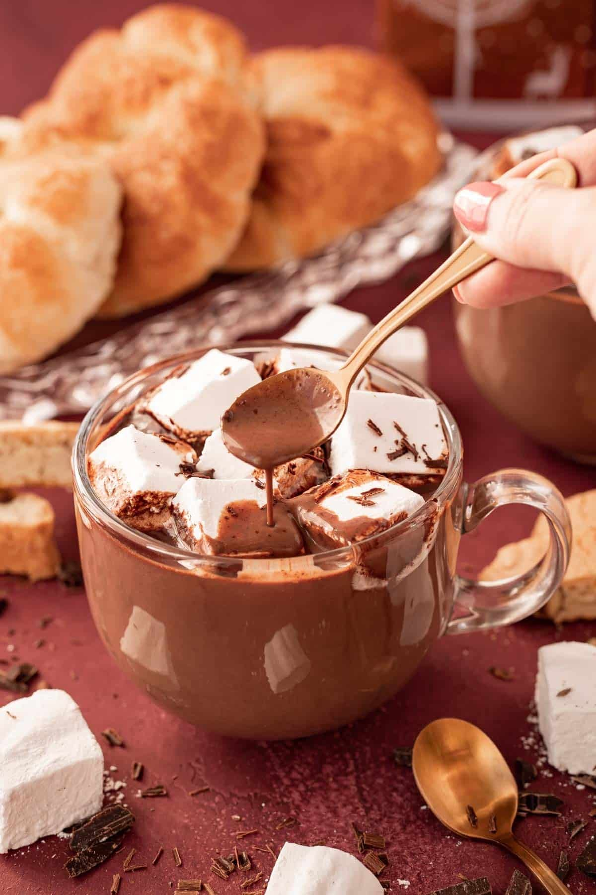
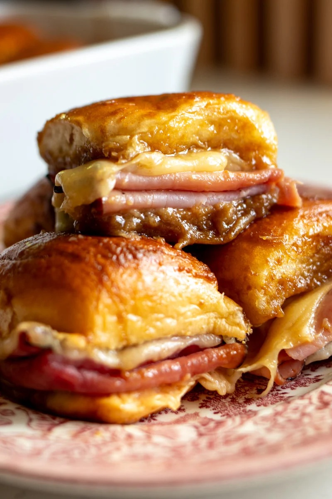
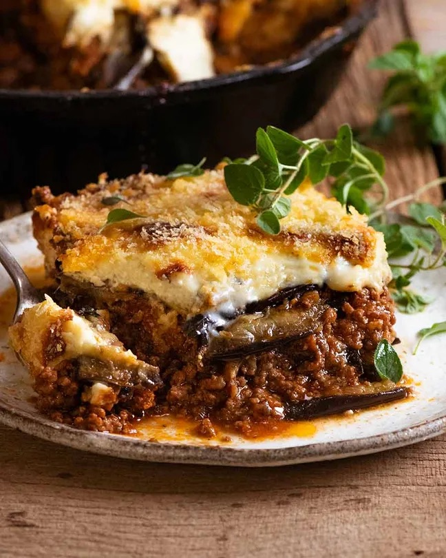

French Hot Chocolate (Anelina Paris Copycat)
20 MINS
By Rebecca Hubbell

Ingredients
- 1½ cups of whole milk
- ½ cup of heavy cream
- 1 tablespoon powdered sugar (sifted)
- 8 ounces 60% bittersweet chocolate finely chopped
- 1 teaspoon vanilla extract (optional)
- homemade whipped cream (optional topping)
- homemade marshmallows (optional topping)
- chocolate curls (optional topping)
Instructions
-
In a medium saucepan over medium-high heat, whisk together the
1½ cups whole milk, ½ cup heavy cream, and 1 tablespoon
powdered sugar and heat until bubbles start to form
on the outer edge. DO NOT BOIL. 1½ cups whole milk,½ cup
heavy cream,1 tablespoon powdered sugar
-
Remove from heat and add in the chopped
8 ounces 60% bittersweet chocolate and
1 teaspoon vanilla extract,then let sit for 2 minutes
. Then whisk until a rich chocolate color forms; let sit for
about 5 minutes.8 ounces 60% bittersweet chocolate,1
teaspoon vanilla extract
-
Pour the hot chocolate into mugs and finish off with
homemade whipped cream or homemade marshmallows
and chocolate curls.
homemade whipped cream,homemade
marshmallows,chocolate curls
Funeral Sandwhiches (Ham and Cheese Sliders)
20 MINS
By MacKenzie Smith

Ingredients
Brown Sugar/ Djion Sauce
- 1 stick Salted Butter melted
- 2 tablespoon brown sugar
- 2 tablespoon Djion Mustard
- 3 tablespoon Worcestershire Sauce
Funeral Rolls
- 1 pack Hawaiian Rolls (12 rolls)
- ¾ lb Virginia Ham sliced thin
- ½ lb Swiss Cheese sliced thin
- Poppy Seeds (optional)
Instructions
-
FOR SERVING RIGHT NOW: If you're short on time, add a
stick of butter, brown sugar, dijon mustard and worcesthershire
sauce to a simmer over medium heat in a small saucepan. Once it
starts to bubble and thicken, turn off the heat and set aside.
This helps the sauce caramelize onto the bread faster and means
you don't have to marinate the sandwiches.
-
FOR SOAKING OVER NIGHT: If you want the original recipe
just grab a small bowl, whisk together melted butter, brown
sugar, Dijon mustard, and Worcestershire sauce and set aside -
this will be the method you'll use if you want to prep them the
night before.
-
Once the sauce is ready, grease a baking dish and pour in about
3-4 tablespoons of the sauce to coat the bottom.
-
Slice the rolls in half horizontally and lay the bottom half in
the dish.
-
Layer half the Swiss cheese, then the ham, then the rest of the
cheese.
-
Add the top half of the rolls and pour the remaining sauce
evenly over the top of the rolls, making sure they're
well-coated. (Sprinkle with poppy seeds, if using.)
-
Cover tightly with plastic wrap and refrigerate for at least 1
hour or overnight. OR If sauce was simmered, skip the chill and
go straight to baking.
-
Preheat oven to 350°F and bake uncovered for 15-20 minutes,
until the tops are golden brown and the cheese has melted.
- Slice and serve warm.
Moussaka (Greek Beef & Eggplant Lasagna)
1hr 10 MINS
By Nagi Maehashi

Ingredients
Eggplant
-
1 kg / 2 lb eggplant (aubergines),
0.75cm / 0.3″ thick slices
- 1 tsp salt
- 2 – 3 tbsp olive oil
Filling
- 1 tbsp olive oil
- 1 onion , diced (brown, white, yellow)
- 3 garlic cloves , minced
- 1.4 lb / 700 g ground beef or lamb (mince)
- 1/2 cup red wine , dry (optional)
- 14 oz /400g crushed tomatoes
- 3 tbsp tomato paste
- 1 cup beef broth/stock
- 1 beef bouillon cube , crumbled (or 1 tsp powder)
- 2 bay leaves
- 1.5 tsp sugar (any)
- 2 tsp dried oregano
- 1/2 tsp cinnamon (or 1 stick, use whole)
- 3/4 tsp salt
Bechemel Sauce
- 4 tbsp (60g) butter
- 5 tbsp plain flour
- 2 1/2 cups milk (any fat %)
- 1/4 tsp nutmeg, freshly grated (optional)
-
1/2 cup parmesan cheese, grated
(or Kefalotiri Cheese)
- 1 egg
- 1 egg yolk
-
1 1/4 tsp Vegeta, vegetable or chicken stock powder
(or salt)
- 1/4 tsp pepper
Topping
- 1/3 cup panko breadcrumbs
Instructions
Eggplant
-
Place eggplant slightly overlapping in a large colander.
Sprinkle with some salt. Repeat with remaining eggplant.
-
Leave to sweat for 30 minutes. Meanwhile, make Meat Sauce and
Béchamel Sauce.
- Preheat oven to 240C/450F.
-
Pat eggplant dry – make sure to do this well, otherwise it’s too
salty. Lay on parchment paper lined trays (you might need 3
trays, work in batches), brush with oil.
-
Bake 15 – 20 minutes or until lightly browned and softened .
Remove and set aside to cool slightly.
Meat Sauce
-
Heat olive oil in a large skillet or pot over high heat, then
cook the garlic and onion for 2 minutes
-
Add the beef or lamb and cook until it changes from pink to
brown, breaking it up as you go.
-
Add wine, cook for 1.5 minutes or until alcohol smell is gone.
-
Add remaining ingredients and stir to combine. Bring to a
simmer, then lower heat to medium low and cook for 15 minutes,
or until reduced to a thick sauce.
Bechamel Sauce
-
Melt butter in a pan over medium heat. Add flour and cook for 1
minute, stirring constantly.
-
Stirring constantly, slowly add the milk. Then stir regularly
for 3 to 5 minutes or until it thickens so that it thickly coats
the back of a wooden spoon (see video / step photos).
-
Remove from the stove and whisk in cheese, nutmeg, Vegeta/stock
powder (or salt) and pepper.
-
Allow to cool for 5 minutes, then whisk the eggs in. Cover with
lid until required.
Assemble
- Lower oven to 180C/350F (all oven types).
-
Place half the eggplant in the bottom of a baking dish (I used
my 26cm/9″ Lodge skillet), then top with all the Filling.
-
Top with remaining eggplant, then pour over the Béchamel Sauce,
sprinkle with breadcrumbs.
-
Bake for 30 – 40 minutes or until golden brown. Allow to stand
for 10 minutes before serving.